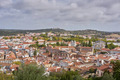
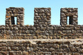

Multimédia
Nesta página apresento alguns conteúdos multimédia sobre a minha cidade, Montemor-o-Novo.

Montemor-o-Novo, onde a história encontra o Alentejo.
Fotografias






Vídeo
Vídeo sobre Montemor-o-Novo:
Poesia
No outeiro de pedra dorme o castelo,
guarda de um tempo que o vento não leva.
Sob o montado, a sombra é castelo
de sobreiros que a terra sustenta e eleva.
Nas grutas do Escoural, ecoa o passado,
vozes de mãos que a pedra gravaram.
Montemor-o-Novo, coração alentejano,
onde o silêncio e a história se juntaram.
Alentejo em movimento
Uma paisagem marcada pela natureza, pela tranquilidade e pelo horizonte alentejano.
Entre história e natureza
Montemor-o-Novo combina património, paisagem e tradição numa experiência tipicamente alentejana.